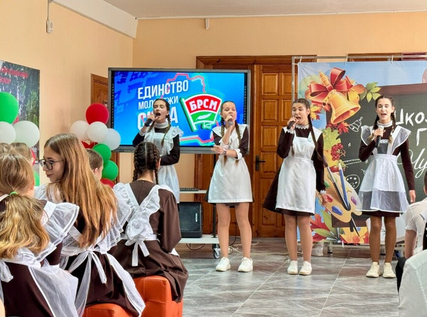
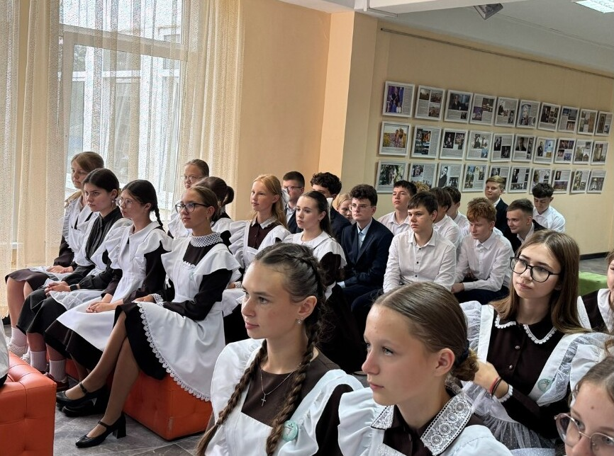
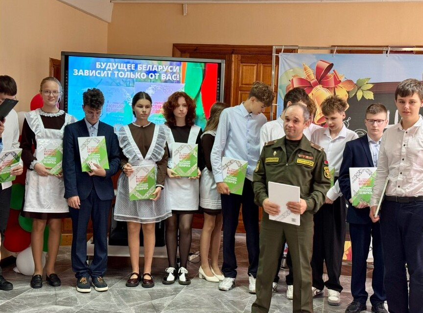
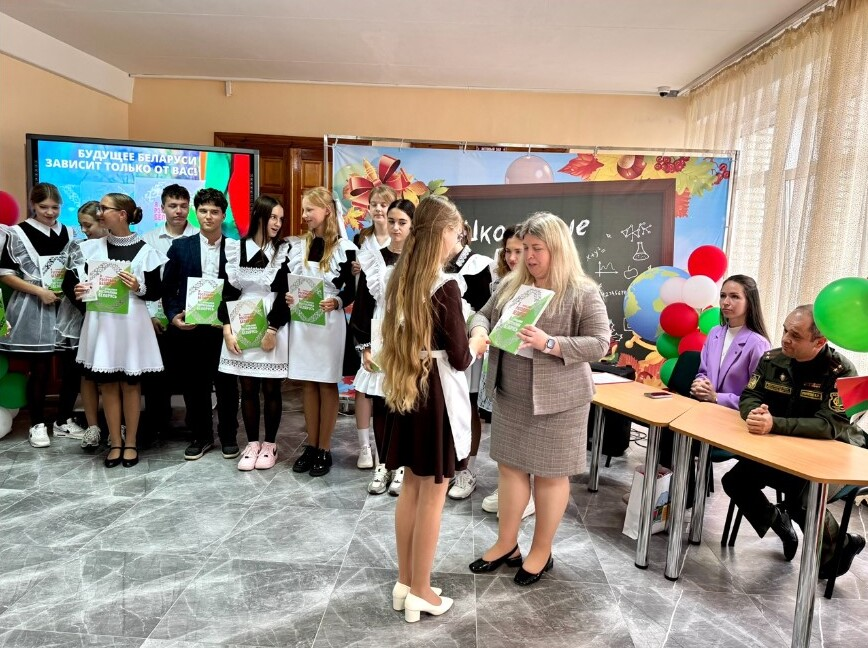
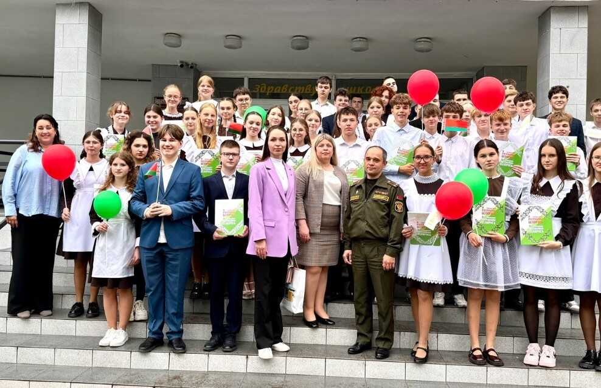

ПАТРИОТИЧЕСКАЯ АКЦИЯ «ТРАДИЦИЯМ ВЕРНЫ!»
5 сентября в гимназии прошла патриотическая акция «Традициям верны!», приуроченная 23-летию ОО «Белорусский республиканский союз молодежи»! Директор гимназии, Лариса Николаевна Махнова, в своем приветственном слове подчеркнула, что истинный патриотизм заключается в конкретных поступках, проявленной инициативе и искренней любви к родной земле.

В акции принял участие заместитель командира по идеологической работе 110 отдельного полка материального обеспечения Северо-западного оперативного командования подполковник Яремовский Валентин Романович. К слову сказать, сын офицера является учащимся 6 «Г» класса и активно участвует в мероприятиях патриотической направленности. Валентин Романович тепло поздравил ребят с важным событием в их жизни, и подчеркнул: «С 14 лет вы становитесь настоящими гражданами Республики Беларусь, принимая на себя значимую ответственность и гордое звание. Слова «гражданин Республики Беларусь» наполнены глубоким смыслом, объединяющим каждого из нас в стремлении к лучшему будущему».

Всем участникам мероприятия была вручена книга «Я – гражданин Республики Беларусь». Эта книга призвана вдохновить молодых людей на глубокое осмысление значимости гражданства Республики Беларусь и формирование чувства ответственности за будущее своей страны.


Акция «Традициям верны!» – это диалог о том, что будущее Беларуси зависит от молодежи.
